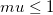

voigt曲面
数：7
パラメータの名前:z0, A, xc, w1, yc, w2, mu
意味:z0 = z オフセット, A = 高さ, xc = x 中心, w1 = x 幅, yc = y 中心, w2 = y 幅, mu = プロファイル形要因
下側境界:, ,
上側境界: 
nlf_Voigt2D(x,y,z0,A,xc,w1,yc,w2,mu)
FITFUNC\VOIGT2D.FDF
Surface Fitting
![z=z_0+A\left[\frac{\mu\!}{\left[1+\left(\frac{x-x_c}{w_1}\right)^2\right]\left[1+\left(\frac{y-y_c}{w_2}\right)^2\right]}+(1-\mu\!)\exp(-\frac{1}{2}\left(\frac{x-x_c}{w_1}\right)^2-\frac{1}{2}\left(\frac{y-y_c}{w_2}\right)^2)\right]](../images/Voigt2D/math-0090ff03a361569c4a90c17b4e629e1c.png "z=z_0+A\left[\frac{\mu\!}{\left[1+\left(\frac{x-x_c}{w_1}\right)^2\right]\left[1+\left(\frac{y-y_c}{w_2}\right)^2\right]}+(1-\mu\!)\exp(-\frac{1}{2}\left(\frac{x-x_c}{w_1}\right)^2-\frac{1}{2}\left(\frac{y-y_c}{w_2}\right)^2)\right]")